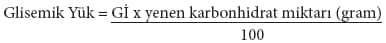

Glisemik İndeks Nedir?
İnsülin direncini yenmek için öncelikli olarak glisemik indeksin ne olduğunu bilmekte fayda vardır. Glisemik indeks kavramı ilk defa 1980’li yıllarda Kanadalı Prof. Dr. David Jenkins tarafından ortaya konmuştur. Bir gıdanın glisemik indeksi onun kan şekerini yükseltme özelliğini gösterir. Glisemik indeks 0 ila 100 arasında değişir. Glukozun değeri 100 kabul edilerek diğer karbonhidratların kan şekerini yükseltme etkisi sıralanır. Glisemik indeksi yüksek gıdalar kan şekerini çok hızlı yükseltir ve bu nedenle kilo yapar. Glisemik indeksi düşük gıdalar ise, kan şekerini yavaş ve daha az yükseltir. Bu tür gıdalar zayıflamak için çok faydalıdır. Protein ve yağlar için glisemik indeks söz konusu değildir. Kan şekerini çok yükselten karbonhidratlara yüksek glisemik indeksli, az yükseltenlere düşük glisemik indeksli karbonhidratlar denir. Yüksek glisemik indeksli karbonhidratlar kan şekerini çok artırdıkları gibi, insülin hormonunu da çok yükseltirler.
Karbonhidratlarla birlikte yenen protein ve yağ da o karbonhidratın kan şekerini yükseltmesine katkıda bulunabilir.
Zayıflamak isteyen kişilerin glisemik indeksi düşük gıdalarla beslenmesi gerekir. Glisemik indeksi (şeker yükü) yüksek olan gıdaların, yani rafine edilmiş şekerlerin, nişastalı yiyeceklerin, baklava, börek, reçel ve patatesin çok az yenmesi gerekir. Kişilerin her gıdanın glisemik indeksini ayrı ayrı bilmesi çok zor ise de, zayıflamak isteyen bir kişinin bazı gıdaların glisemik indeksini bilmesi gerekir. Şeker, bal, reçel, muhallebi ve keşkül gibi sütlü tatlılar, baklava, kadayıf gibi hamurlu tatlılar, meşrubatlar, çikolata, bazı meyve suları, meyve kompostoları, bira, kekler, kurabiyeler, bisküviler ve pudingler fazla miktarda basit karbonhidrat (şeker) içerirler ve glisemik indeksleri (şeker yükü) yüksektir. Bu tür şekerlerden uzak durulmalı, beyaz ekmek, beyaz pirinç ve patates gibi şeker yükü fazla olan gıdalar az tüketilmelidir. Tüketilmesi önerilen düşük şeker yüklü gıdalar ise, yulaf, kuru baklagiller ve tam buğday ekmeğidir.
Glisemik İndeks Nasıl Hesaplanır?
Glisemik indeksi (Gİ) hesaplamak için 8-10 sağlıklı kişiye bir gece açlık sonrası sabahleyin bir karbonhidratı 10-15 dakikada yemeleri istenir ve bunu yemeden önce ve yedikten sonra 15 dakikada bir parmaktan kan şekerine iki saat süreyle bakılır. Aynı kişilere başka bir gün saf glukoz içirilir ve benzer ölçümler yapılır. Bunlar bir grafikte değerlendirilir ve o gıdanın glisemik indeksi hesaplanır. Glukozun (kan şekeri) Gİ değeri 100 kabul edilir ve diğer karbonhidratlar buna göre sıralanır.[2] Gıdanın pişirilmesi, işlenişi, kabuklu oluşu veya olmayışı Gİ değerini etkiler.
Düşük, Orta ve Yüksek Glisemik İndeksli Gıdalar
Bir gıdanın glisemik indeksi 55’den az ise düşük, 56-69 arasında ise orta, 70’ten fazla ise yüksek glisemik indeksli gıda denir.
Düşük glisemik indeksli gıdalar: Sebzeler, meyvelerin çoğu ve tam tahıllar düşük glisemik indekslidir. Kuruyemişler (badem, ceviz, fındık, antepfıstığı, çam fıstığı, ayçekirdeği, kabak çekirdeği) düşük Gİ’lidir. Süt ürünlerinin (süt, yoğurt, peynir, ayran) Gİ’si de düşüktür.
Orta glisemik indeksli gıdalar: Orta Gİ’li gıdalar ise bazı kekler, papaya ve ananas gibi bazı tropikal meyvelerdir.
Yüksek glisemik indeksli gıdalar: Yüksek Gİ’li gıdalar beyaz ekmek, pirinç, kekler ve pastalardır. Bir gıdaya un ve şeker girdikçe Gİ’si yükselir. Karpuz ise en yüksek Gİ’li meyvedir ve değeri 72’dir.
Avustralya’da gıdaların üzerine glisemik indeks değerleri yapıştırılmaktadır.
Glisemik Yük
Glisemik yük (GY) bir günde yenen karbonhidrat miktarının oluşturduğu toplam şeker yüküdür. Glisemik yük fazlaysa yani bir günde fazla karbonhidrat alırsanız bu da zararlıdır. Glisemik indeksi düşük gıdaların günlük tüketim miktarı da bu nedenle önemlidir. Diğer bir deyimle karbonhidratın kalitesi kadar miktarı da önem taşımaktadır. İşte glisemik yük bir karbonhidratın hem Gİ’sini (kalitesini) hem de kantitesini yansıtır. Aşırı miktarda düşük Gİ’li karbonhidrat yenirse yine kilo alınır. Glisemik yükü hesaplamak için yenen gıdanın Gİ’si ile o gıdadaki karbonhidrat miktarı çarpılarak 100 sayısına bölünür. Bunu şöyle formüle edebiliriz:

Örnek olarak, bir elmayı göz önüne alalım. Elmanın Gİ’si 40 olup 1 elma ortalama 15 gram karbonhidrat içerir. Bu elmanın GY’si, GY = 40 x 15/100 = 6 olarak bulunur.
Küçük ve fırında pişmiş bir patatesi göz önüne alırsak onun Gİ’si 80 olup 15 gram karbonhidrat içerir. Bunun GY’si, GY= 80x15/100=12 olarak bulunur.
Görüldüğü gibi patatesin glisemik yükü elmanınkinin 2 katıdır.
Gıdalardan glisemik yükü daha az olanı tercih etmek daha sağlıklıdır. Bir gıdanın glisemik yükü 20 ve üzerinde ise yüksek, 11–19 arasında ise orta, 10’dan az ise düşük glisemik yüklüdür, denir.
Kilo vermek için günlük ihtiyaçtan fazla karbonhidrat almamak gerekir. Başlangıçta günlük glisemik yük toplam 60–75 olmalıdır. Her öğünde 15 GY alınacak şekilde yemek yenmelidir. Her ara öğünde ise 10 GY kadar karbonhidrat alınmalıdır. Gebe veya emzirenlerde günlük alınan GY 130 olmalı, çok aktif iseniz GY 100–150 olmalıdır.
Gıdaların Gİ ve GY değerleri aşağıdaki tabloda verilmiştir.
Yemeklerde yağ, protein ve karbonhidrat birlikte yendiği halde Gİ değerleri yine de faydalı olmaktadır.
Gıdaların pişirilme şekillerinin Gİ’lerini etkilediğini ifade etmiştik. Örneğin, makarnanın Gİ’si düşüktür, 30–60 arasındadır. Orta derecede pişirilirse Gİ’si orta seviyededir, aşırı pişerse Gİ’si artar.
Rafine şekerin Gİ’si 60–65’tir.
Bir yemeğin asit oranı artarsa Gİ’si azalır. Salataya sirke ve limon koymak yemeğin Gİ’sini azaltır.
Ne Kadar Karbonhidrat Yemeli?
Gİ bize bir karbonhidratın kan şekerini yükseltme özelliğini verir. Ancak bir günde yenecek karbonhidrat miktarı da önemlidir. Eğer kilo vermek istiyorsak GY günde toplam 60–80 olacak şekilde beslenmeliyiz. Yediğimiz gıdaların Gİ düzeyi de ortalama 50–55 arasında olmalıdır.
Gıdaların Glisemik İndeks Değerleri[3]
Tabloyu şöyle okuyabilirsiniz; 250 gram kolanın glisemik indeksi 63, glisemik yükü 16’dır ve 26 gr karbonhidrat içerir.